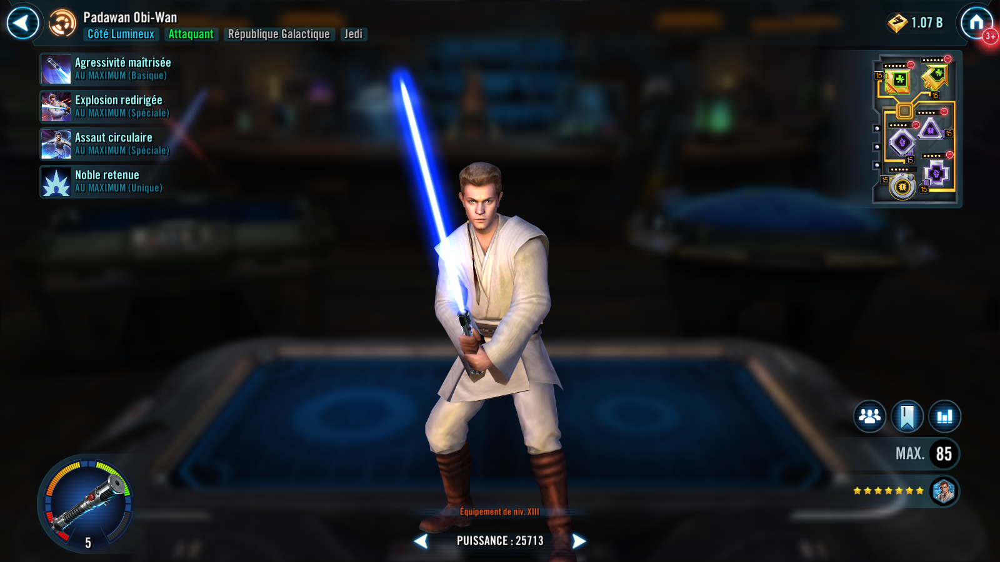

Padawan Obi-Wan
Disciplined Attacker who utilizes years of Jedi training to protect his allies and overwhelm his foes
Disciplined Attacker who utilizes years of Jedi training to protect his allies and overwhelm his foes

Deal Physical damage and inflict Potency Down on target enemy for 1 turn. If that enemy has 50% or more Health, Padawan Obi-Wan gains 20% Turn Meter and Foresight for 1 turn. Deal 5% more damage (stacking, max 50%) for each stack of Heal Over Time Padawan Obi-Wan has.
If there was an ally Master Qui-Gon at the start of battle: If target enemy has less than 50% Health, Padawan Obi-Wan gains Defense Penetration Up and Offense Up for 1 turn.
Deal Physical damage to target enemy and Daze them for 2 turns. If this attack critically hits, remove 100% Turn Meter from target enemy and Padawan Obi-Wan gains 100 Speed for 2 turns.
This attack can't be evaded.
Deal Physical damage and inflict Defense Down for 2 turns on all enemies, then if there is an active ally Queen Amidala, deal damage again.
Galactic Republic Jedi allies gain Critical Chance Up and Offense Up for 2 turns.

At the start of battle, Padawan Obi-Wan gains 25% Critical Chance for each other Galactic Republic ally and if there is an ally Master Qui-Gon and Queen Amidala, Padawan Obi-Wan gains Discipline until the end of battle which can't be copied, dispelled, or resisted.
Padawan Obi-Wan has +5% Critical Chance (stacking, max 50%) for each stack of Heal Over Time on him and +5% Critical Damage (stacking, max 50%) for each stack of Protection Over Time on him.
If there is an ally Master Qui-Gon, whenever he uses an ability during his turn, Padawan Obi-Wan assists dealing 40% less damage. The first time Master Qui-Gon is defeated, Padawan Obi-Wan takes a bonus turn and gains 5% Offense for each Relic Amplifier level Master Qui-Gon had for 4 turns.
If there is an active Handmaiden Decoy, Padawan Obi-Wan grants her 50% Defense.
If Padawan Obi-Wan is active, whenever another ally is critically hit, they gain Defense Up for 1 turn and Padawan Obi-Wan gains Critical Damage Up for 1 turn.
Discipline: Attacks can't be countered; whenever this character gains a stack of Protection Over Time they also gain a stack of Heal Over Time for 2 turns; this character's attacks ignore Protection
Omicron Boost : While in Conquests: Allies gain 10% Max Health and Max Protection and 30 Speed. Allies gain an additional 10% Max Health and Max Protection for each Relic Amplifier level Padawan Obi-Wan has. Cut the Offense of Sith enemies in half until the end of battle.
Padawan Obi-Wan has a 50% chance to take a bonus turn whenever an enemy ends their turn. When Padawan Obi-Wan starts this bonus turn, allies recover 75% Health, gain 75% Offense for 2 turns, and enemies are inflicted with Buff Immunity and Healing Immunity for 2 turns, which can't be resisted.
If Padawan Obi-Wan's Stamina is 50% or greater: Whenever an ally uses a Special ability, they inflict Accuracy Down, Critical Chance Down, Critical Damage Down, Defense Down, Evasion Down, Offense Down, Potency Down, Speed Down, Stagger, and Tenacity Down on target enemy for 2 turns, which can't be evaded.
If Padawan Obi-Wan's Stamina is 50% or greater: Whenever Padawan Obi-Wan uses a Special ability, allies gain Accuracy Up, Critical Chance Up, Critical Damage Up, Defense Up, Evasion Up, Offense Up, Potency Up, Speed Up, and Tenacity Up for 2 turns.